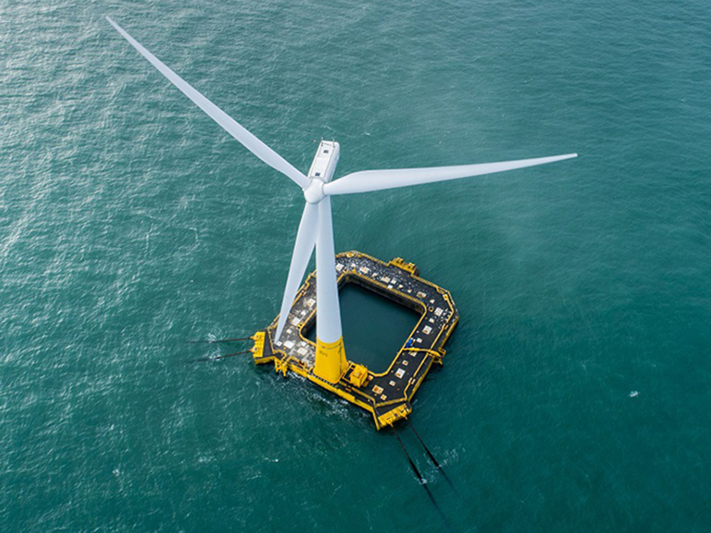

La energía eólica consiste en convertir la energía que produce el movimiento de las palas de un aerogenerador impulsadas por el viento en energía eléctrica.
Empezando por la lucha contra el cambio climático: aprovechar la energía del viento significa reducir de forma considerable el uso de combustibles fósiles, es decir,ahorrar emisiones de dióxido de carbono, partículas finas y otros gases de efecto invernadero
Principalmente se utiliza para producir energía eléctrica mediante aerogeneradores. Es un recurso abundante, renovable, limpio y ayuda a disminuir las emisiones de gases de efecto invernadero al reemplazar termoeléctricas a base de combustibles fósiles, lo que la convierte en un tipo de energía verde.
Los molinos son tecnologías de extracción de agua que son accionados a través de la energía eólica (viento). Permiten sacar agua de las perforaciones, pozos, como también de una represa o arroyo. A su vez puede utilizarse para elevar el agua por encima del nivel del suelo o para bombear agua a distancia considerable.
La energía solar es una energía renovable obtenida a partir de la radiación electromagnética del Sol. Se trata de una energía renovable porque se obtiene de una fuente natural e inagotable, en este caso el Sol.
La energía solar es una de las fuentes de energías renovables más fáciles de producir, especialmente la solar fotovoltaica, lo que está haciendo que se esté extendiendo su uso en las zonas climáticas con más horas de sol.
Es ecológica, una fuente inagotable (el Sol estará con nosotros durante los próximos millones de años), y su transformación en energía térmica o fotovoltaica no produce residuos (al contrario que la nuclear o que las energías fósiles).
La energía hidráulica es aquella que aprovecha el movimiento del agua para generar energía. Su obtención se debe al aprovechamiento de la energía cinética y potencial de los saltos de agua o corrientes. El propio movimiento del agua hace girar una turbina, que está conectada a un transformador, produce la energía eléctrica.
La mayoría de las presas hidráulicas tienen como objetivo la producción de energía eléctrica, usando turbinas hidráulicas. Los países que tienen caudales de ríos constantes y con volumen obtienen la mayor parte de la electricidad en centrales hidráulicas por sus grandes ventajas. En ese sentido, se puede destacar que se trata de un recurso natural, e inagotable (aunque necesita de un lugar adecuado para producirse). Es limpia y no contaminante, es decir, no produce gases de efecto invernadero, ni emisiones tóxicas; y además es flexible ya que su producción puede regularse a las necesidades.